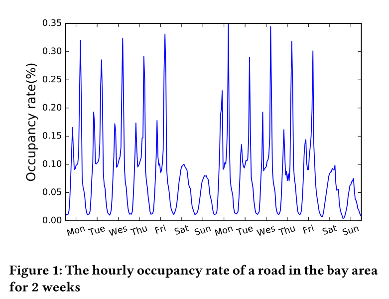
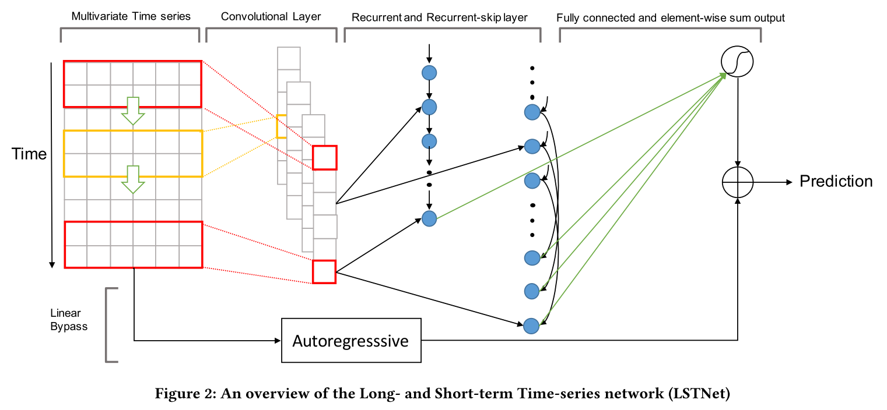
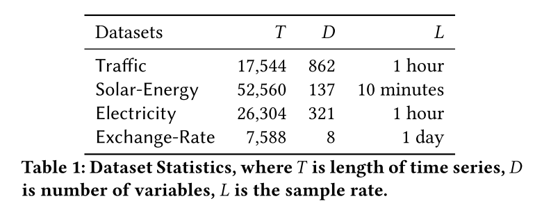
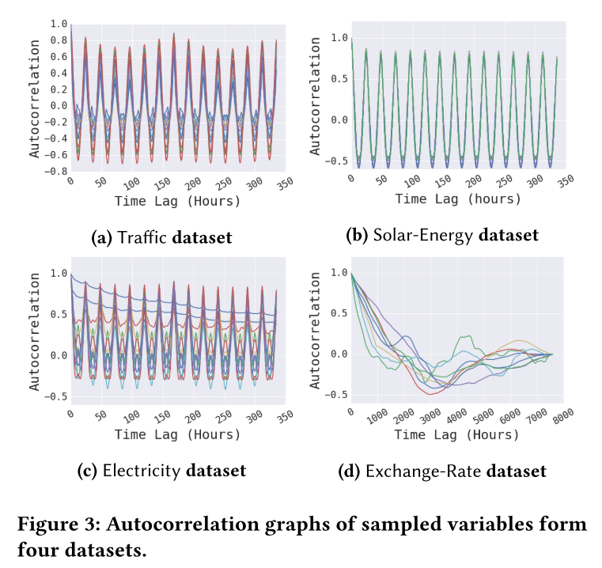
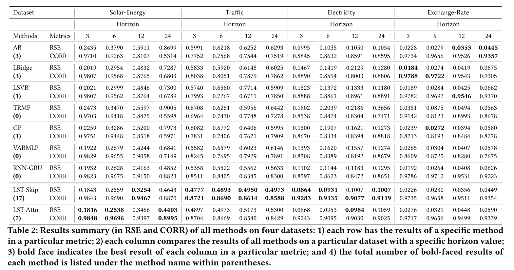

- 来源：SIGIR-2018
摘要
现实应用中的时序数据常常涉及长期和短期的混合模式，而传统的如自回归模型和高斯过程的模型可能无法做到。
文章提出LSTNet，采用CNN和RNN在变量间抽取短期局部依赖模式并为时序的趋势探索长期模式；此外，作者利用传统的自回归模型来解决神经网络scale不敏感的问题。文章内容
引言
figure1：高速公路每小时的占用率
Recurrent-Skip：一种新的递归结构，被设计用于捕获非常长期的依赖模式，并使优化更加容易（利用输入时间序列信号的周期特性）
- LSTNet在非线性神经网络部分加入了传统的自回归线性模型，使非线性深度学习模型对违背尺度变化的时间序列具有更强的鲁棒性。
- figure2：LSTNet的网络结构
相关背景
ARIMA，由于计算量大，很少用于高维多变量时间序列预测；VAR，忽略输出变量的依赖性，将AR模型扩展到多变量。但其模型的容量随着时间窗的尺寸线性增长，随着变量的数量二次增长，这意味着当处理长期模式时，增长起来的大模型易于过拟合；SVR;Ridge Regression;LASSO;尽管如此，像VARs一样，这些线性模型可能无法捕获多变量信号之间复杂的非线性关系。
高斯过程(Gaussian Processes)是一种非参数方法建模分布在连续区域的函数。GP可以用于时序任务中，也可以用于Bayesian函数的先验。然而的高斯过程也带来了高代价的计算复杂度，用于多变量时序预测的高斯过程有着观测值立方的复杂度，由于其核矩阵的矩阵反转。框架
- 旨在于用滚动预测模式来预测未来的一系列信号；多数情况下，预测任务的horizon由具体需求和环境来决定。
卷积部分
- LSTNet的第一层是一个没有池化的卷积网络，用于抽取时间维度的短期模式和变量间的局部依赖；卷积层由若干个宽为$\omega$，高为n的多个过滤器组成（高与变量的数目相同）。第k个过滤器经由输入矩阵X得到$h_{k}=RELU(W_{k}\ast X+b_{k})$，其中*表示卷积操作。
使每个长度为T的输出$h_{k}$在输入矩阵X的左边进行零填充；卷积层输出的尺寸为$d_{c} X T$，$d_{c}$为过滤器的数量。循环部分
- 卷积层的输出同时送入Recurrent and Recurrent-skip，Recurrent是一个带有GRU的循环层并使用RELU函数作为隐层的更新激活函数；
- 循环单元在时间t的隐状态：
- $r_{t}=\sigma(x_{t}W_{xr}+h_{t-1}W_{hr}+b_{r})$
- $u_{t}=\sigma(x_{t}W_{xu}+h_{t-1}W_{hu}+b_{u})$
- $c_{t}=RELU(x_{t}W_{xc}+r_{t}\bigodot(h_{t-1}W_{hc})+b_{c})$
- $h_{t}=(1-u_{t})\bigodot h_{t-1}+u_{t}\bigodot c_{t}$
$\bigodot$表示向量对应位置元素的乘积
- Recurrent-skip
- 由于梯度消失的原因，GRU和LSTM通常难以在实际中捕捉到非常长期的关联，文章利用现实集中的周期模式提出一个recurrent-skip来缓解这个问题。扩展信息流的时间跨度，从而简化优化过程。具体的，在当前隐藏单元和相同阶段的临近周期之间建立跳跃链接。
- $r_{t}=\sigma(x_{t}W_{xr}+h_{t-p}W_{hr}+b_{r})$
- $u_{t}=\sigma(x_{t}W_{xu}+h_{t-p}W_{hu}+b_{u})$
- $c_{t}=RELU(x_{t}W_{xc}+r_{t}\bigodot(h_{t-p}W_{hc})+b_{c})$
- $h_{t}=(1-u_{t})\bigodot h_{t-p}+u_{t}\bigodot c_{t}$
$p$表示跳跃的隐藏单元数目；
- 文章使用一个dense layer来结合recurrent and recurrent-skip的输出
- $h_{t}^{D}=W^{R}h_{t}^{R}+\sum_{i=0}^{p-1}W_{i}^{S}h_{t-i}^{S}+b$
- $h_{t}^{D}$表示神经网络在时间t时刻的预测结果
时间注意力层
- recurrent-skip需要一个预定义的超参数p，这不利于非季节性的时间序列预测或周期长度动态变化的的时序问题。故引入注意力机制，在输入矩阵的每个窗口位置学习隐藏表示的权重组合。$\alpha_{t}=AttnScore(H_{t}^{R},h_{t-1}^{R})$
- 时间注意力层的最终输出是加权上下文向量$c_{t}=H_{t}\alpha_{t}$和最后一个窗口隐藏表示$h_{t-1}^{R}$以及一个线性投影操作的串联。$h_{t}^{D}=W[c_{t};h_{t-1}^{R}]+b.$
自回归部分
- 由于卷积和循环部分的非线性特质，神经网络模型的一个主要缺点是输出的scale对于输入的scale不敏感。在实际数据集中，输入信号的scale不断地非周期性变化，显著的降低了神经网络模型的预测精度。
- LSRNet的最终预测被分解为一个主要关注局部规模的线性部分和一个包含循环模式的非线性部分。文章使用经典的AR模型作为线性成分
- AR model：$h_{t,i}^{L}=\sum_{k=0}^{q^{ar}-1}W_{k}^{ar}y_{t-k,i}+b^{ar}$
- LSTNet的最终预测结果通过整合神经网络和AR部分的输出得到：$\hat{Y}_{t}=h_{t}^{D}+h_{t}^{L}$
- 目标函数：$minimize_{\theta}\sum_{t\in \Omega_{Train}}\begin{Vmatrix}
Y_{t}-\hat{Y}_{t-h}
\end{Vmatrix}_{F}^{2}$评价
- 包括LSTNet在内使用了九种方法，四个基准数据集；
- 三个评价指标：RSE,RMSE,CORR
- 四个数据集：
- traffic：加利福尼亚州旧金山大湾区2015-2016年48个月的高速交通占有率(0-1)
- solar-energy：2006年每10分钟从阿拉巴马州的137个光伏电站取样一次
- electricity：2012-2014年321个客户每十五分钟记录的电力消耗，将其转换为每小时消耗
- exchange-rate：1990年至2016年澳大利亚、英国、加拿大、瑞士、中国、日本、新西兰、新加坡等8个国家的日汇率。
所有数据集按时序划分训练集、验证集、测试集为60%-20%-20%；
figure3：四个数据集的自相关图
table2：各种方法的效果
